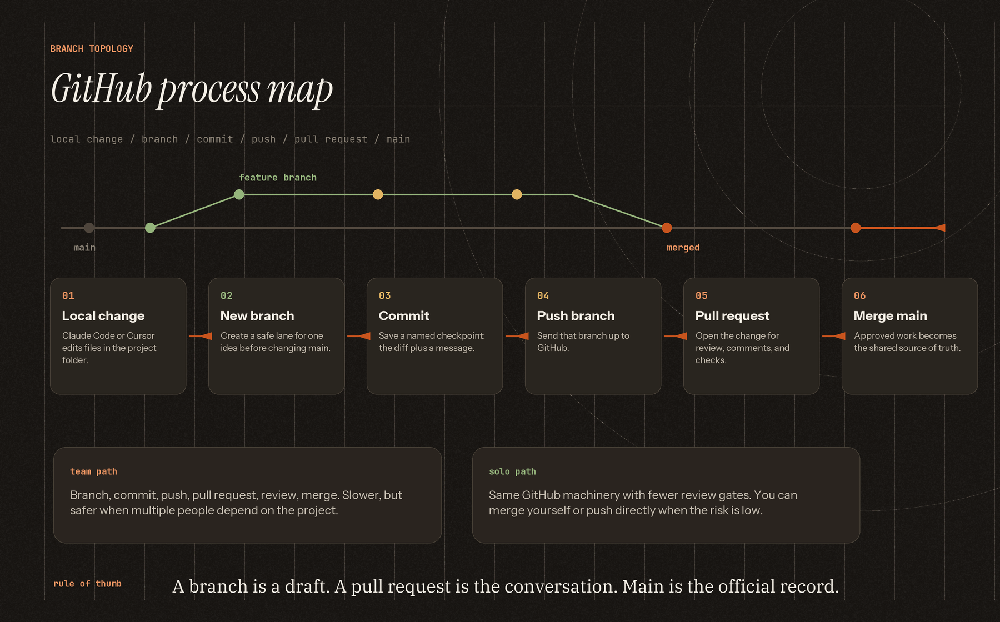
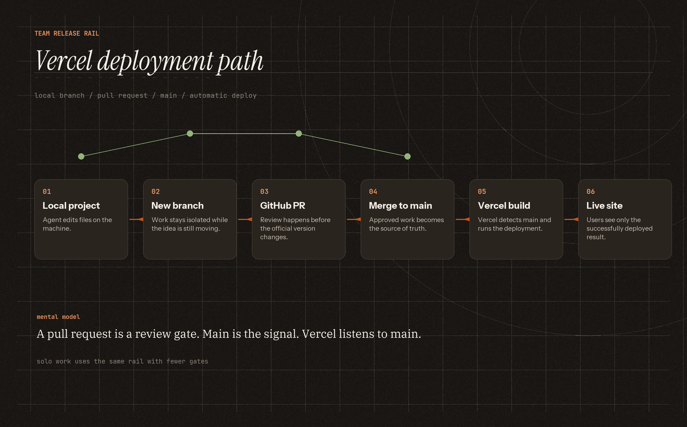
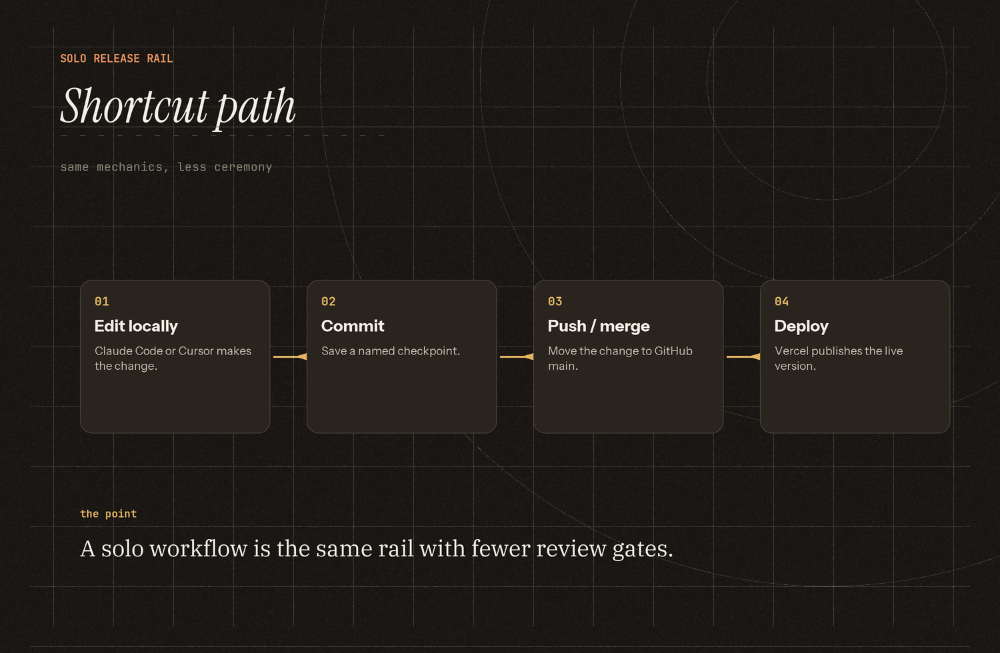
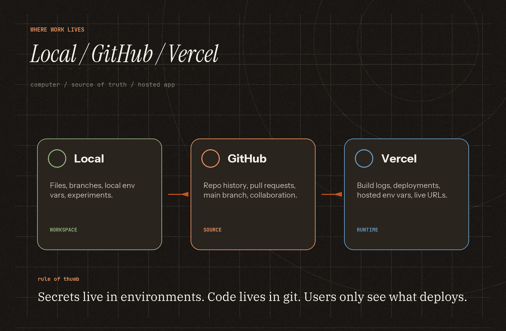

github workflow
GitHub process map
The GitHub-specific mental model: local changes become a branch, the branch gets committed and pushed, the pull request becomes the review conversation, and main stays the official record.

team workflow
Vercel deployment path
The slower team path is worth learning first because it shows all the pieces: local work, branch, pull request, merge to main, then Vercel auto-deploys the merged code. Click for the full-size canvas.

solo workflow
The shortcut path
If you are working alone, the pull-request ceremony can be lighter. You can merge your own branch or push directly when the risk is low.

what lives where
Local, GitHub, Vercel
This is the mental model to keep repeating: your computer is where work happens, GitHub is the shared source of truth, and Vercel is where the app runs.

resource index
Diagrams to use as we go
Keep the page as a small library of explainers: some already exist, some should be made when the topic comes up in session.

{kind=link}
{kind=link}
{kind=link}
{kind=link}